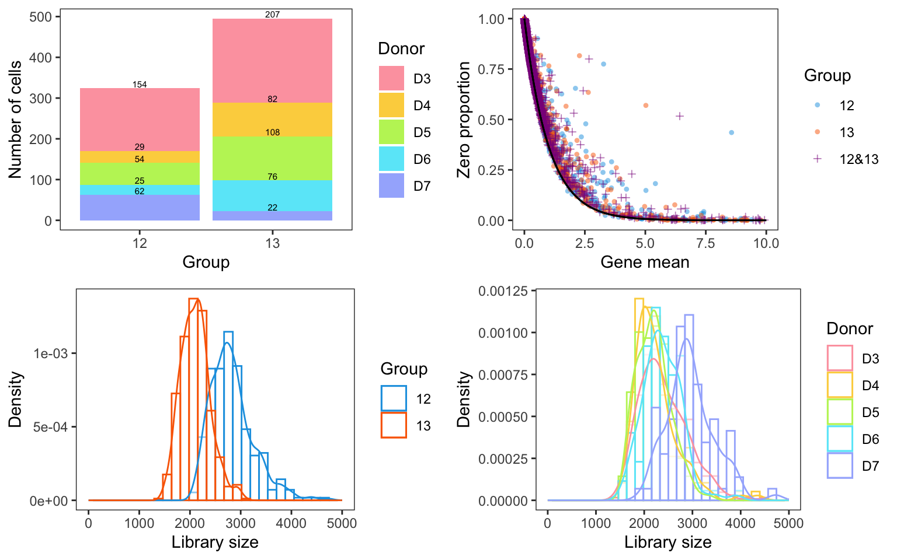
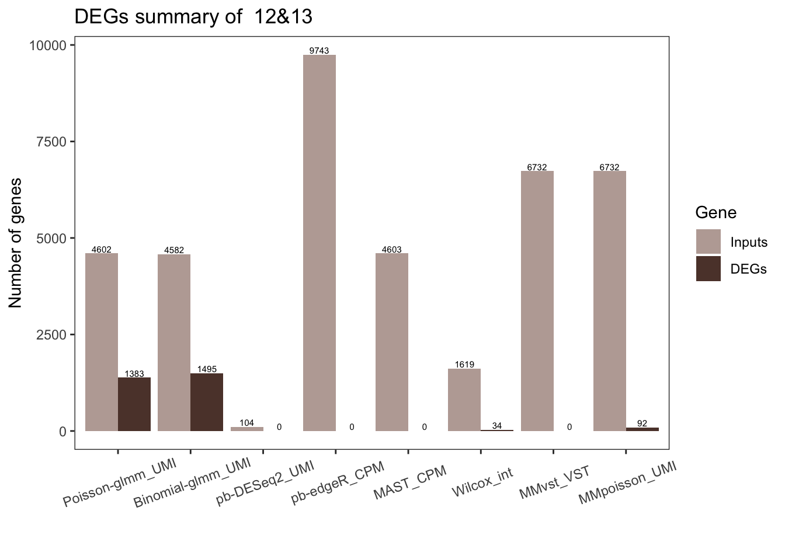
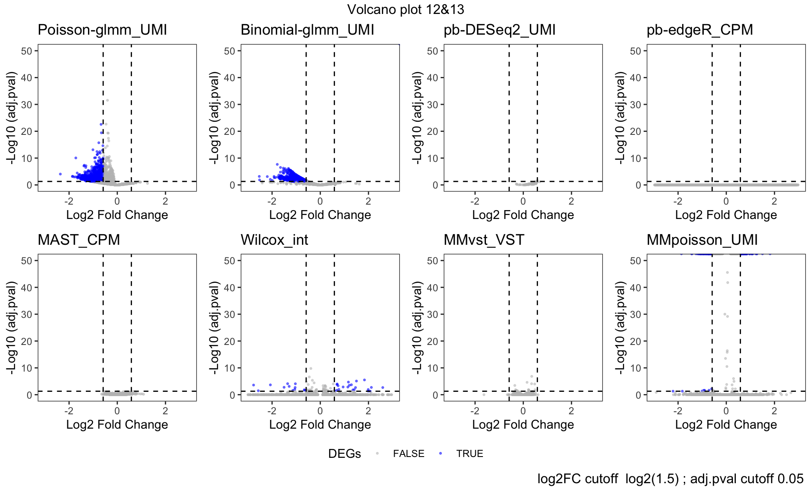
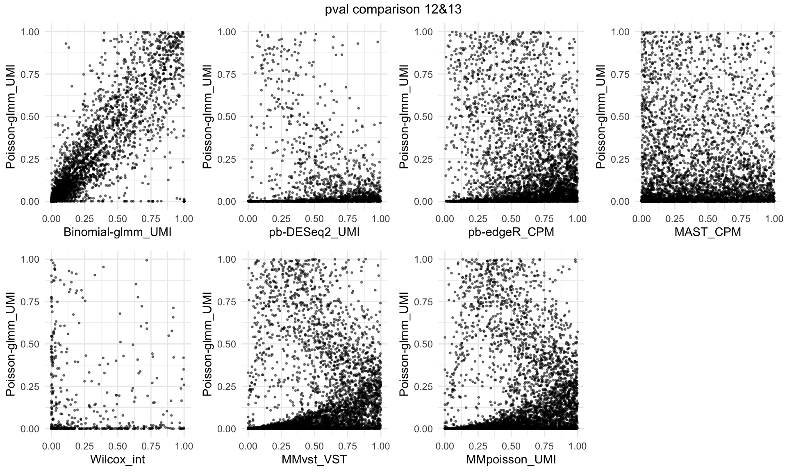
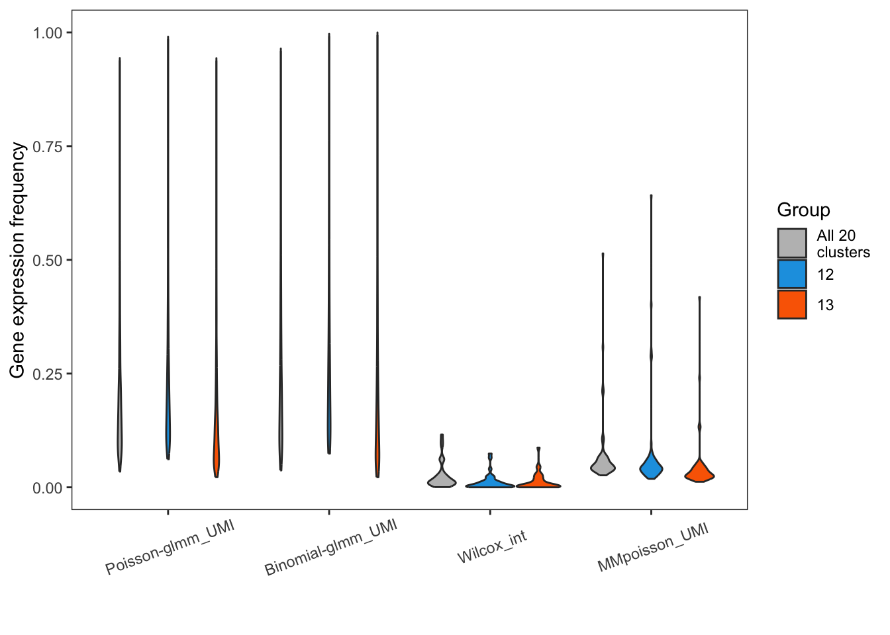
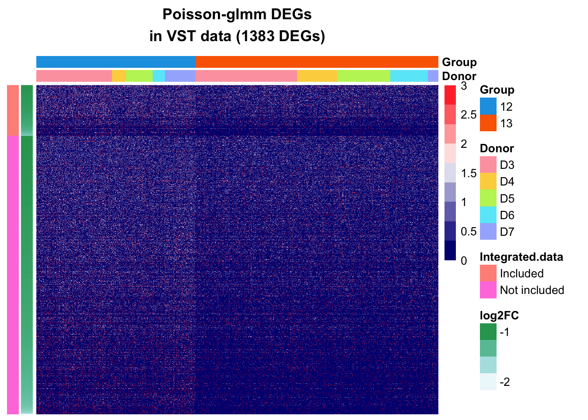
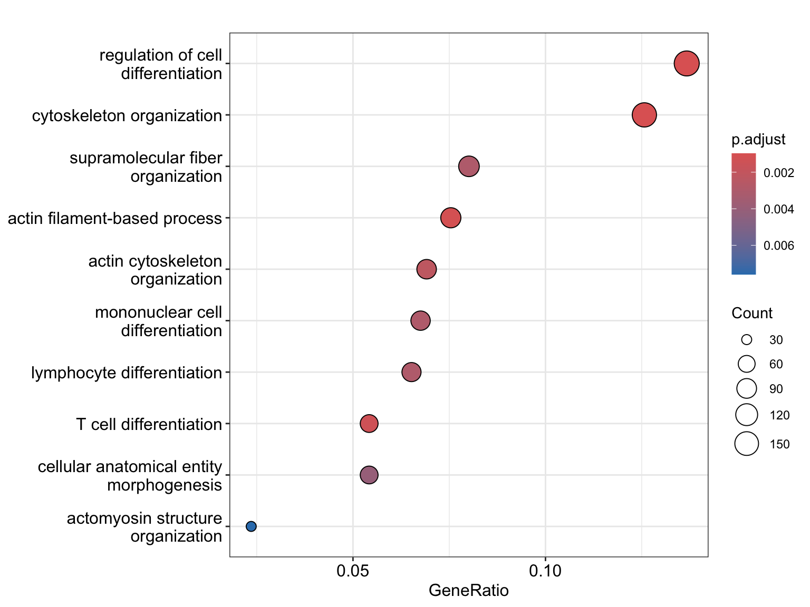
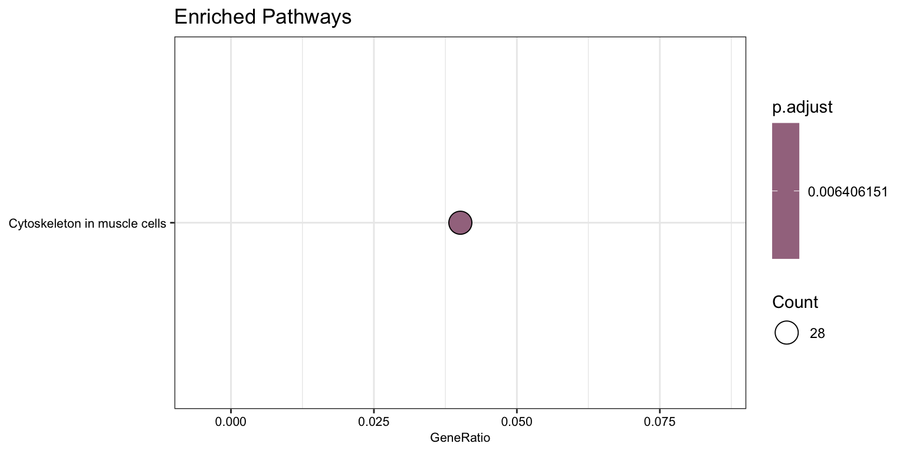

Group12_13
Chih-Hsuan Wu
Last updated: 2023-12-10
Checks: 7 0
Knit directory: DEanalysis/
This reproducible R Markdown analysis was created with workflowr (version 1.7.0). The Checks tab describes the reproducibility checks that were applied when the results were created. The Past versions tab lists the development history.
Great! Since the R Markdown file has been committed to the Git repository, you know the exact version of the code that produced these results.
Great job! The global environment was empty. Objects defined in the global environment can affect the analysis in your R Markdown file in unknown ways. For reproduciblity it’s best to always run the code in an empty environment.
The command set.seed(20230508) was run prior to running
the code in the R Markdown file. Setting a seed ensures that any results
that rely on randomness, e.g. subsampling or permutations, are
reproducible.
Great job! Recording the operating system, R version, and package versions is critical for reproducibility.
Nice! There were no cached chunks for this analysis, so you can be confident that you successfully produced the results during this run.
Great job! Using relative paths to the files within your workflowr project makes it easier to run your code on other machines.
Great! You are using Git for version control. Tracking code development and connecting the code version to the results is critical for reproducibility.
The results in this page were generated with repository version ae4b56c. See the Past versions tab to see a history of the changes made to the R Markdown and HTML files.
Note that you need to be careful to ensure that all relevant files for
the analysis have been committed to Git prior to generating the results
(you can use wflow_publish or
wflow_git_commit). workflowr only checks the R Markdown
file, but you know if there are other scripts or data files that it
depends on. Below is the status of the Git repository when the results
were generated:
Ignored files:
Ignored: analysis/figure/
Untracked files:
Untracked: .DS_Store
Untracked: .Rhistory
Untracked: analysis/analysis on fallopian tubes.Rmd
Untracked: data/.Rhistory
Untracked: data/10X_DEresult_update.RData
Untracked: data/10X_Kang_DEresult.RData
Untracked: data/10X_inputdata.RData
Untracked: data/10X_inputdata_DEresult.RData
Untracked: data/10X_inputdata_cpm.RData
Untracked: data/10X_inputdata_integrated.RData
Untracked: data/10X_inputdata_lognorm.RData
Untracked: data/10Xdata_annotate.rds
Untracked: data/Bcells.Rmd
Untracked: data/Bcellsce.rds
Untracked: data/data2sce.RData
Untracked: data/permutation.RData
Untracked: data/permutation13.RData
Untracked: data/permutation2.RData
Untracked: data/vstcounts.Rdata
Untracked: figure/
Unstaged changes:
Modified: analysis/CD14+ Monocytes.Rmd
Modified: analysis/analysis on Kang.Rmd
Deleted: analysis/first-analysis.Rmd
Modified: code/DE_methods.R
Modified: code/functions_in_rmd.R
Note that any generated files, e.g. HTML, png, CSS, etc., are not included in this status report because it is ok for generated content to have uncommitted changes.
These are the previous versions of the repository in which changes were
made to the R Markdown (analysis/group12_13.Rmd) and HTML
(docs/group12_13.html) files. If you’ve configured a remote
Git repository (see ?wflow_git_remote), click on the
hyperlinks in the table below to view the files as they were in that
past version.
| File | Version | Author | Date | Message |
|---|---|---|---|---|
| Rmd | ae4b56c | C-HW | 2023-12-10 | adjust ylim of p-value histogram |
| html | ac027b0 | C-HW | 2023-12-09 | Build site. |
| Rmd | 582be29 | C-HW | 2023-12-09 | update new DE results |
| html | 2a17159 | C-HW | 2023-12-05 | Build site. |
| Rmd | e7f3de4 | C-HW | 2023-12-05 | fix Wilcox log2FC sign |
| html | e32516f | C-HW | 2023-12-05 | Build site. |
| html | bc13544 | C-HW | 2023-12-04 | Build site. |
| Rmd | 39196a3 | C-HW | 2023-12-04 | fix log2FC sign |
| html | 42900f0 | C-HW | 2023-12-01 | Build site. |
| Rmd | c774a2d | C-HW | 2023-12-01 | modify method title |
| Rmd | 031d955 | C-HW | 2023-12-01 | create t score comparison |
| html | 031d955 | C-HW | 2023-12-01 | create t score comparison |
| Rmd | 3803697 | C-HW | 2023-12-01 | upload rmd |
| html | 59b08c2 | C-HW | 2023-11-29 | update index, FD permuation, plots axes |
| html | e8b0519 | C-HW | 2023-11-29 | update all pairs |
| html | 6faf9c0 | C-HW | 2023-11-29 | group1213 |
| html | d7d838c | C-HW | 2023-08-11 | update graph |
| html | f314434 | C-HW | 2023-07-26 | add muscat methods |
| html | 7ee9782 | C-HW | 2023-07-13 | add 8_17 |
| html | ccb68e2 | C-HW | 2023-06-29 | log2fc consistence |
| html | 3121ffb | C-HW | 2023-06-22 | color palette heatmap |
| html | d8c99b1 | C-HW | 2023-06-16 | variation description |
| html | 366cd53 | C-HW | 2023-06-06 | add group8_17&2_19 |
| html | 95be122 | C-HW | 2023-05-25 | update 2_19 |
| html | 2107af3 | C-HW | 2023-05-24 | add methods_details |
| html | 13d726d | C-HW | 2023-05-18 | add DE results on different groups |
Data summary

Mean difference in raw data/normalized data

Number of DEGs from each method

Volcano plot

Histogram of p-value/adj.p-value

P-Value comparison across different methods

Log2 fold change comparison across different methods

Violin plot of log2mean of DEGs

Violin plot of gene expression frequency of DEGs

Heatmap of top DEGs
Poisson-glmm DEGs
UMI counts
VST data
CPM data

MA plot

Enrichment analysis


enrichKEGG object

| Version | Author | Date |
|---|---|---|
| ac027b0 | C-HW | 2023-12-09 |

| Version | Author | Date |
|---|---|---|
| ac027b0 | C-HW | 2023-12-09 |
R version 4.2.2 (2022-10-31)
Platform: x86_64-apple-darwin17.0 (64-bit)
Running under: macOS Big Sur ... 10.16
Matrix products: default
BLAS: /Library/Frameworks/R.framework/Versions/4.2/Resources/lib/libRblas.0.dylib
LAPACK: /Library/Frameworks/R.framework/Versions/4.2/Resources/lib/libRlapack.dylib
locale:
[1] en_US.UTF-8/en_US.UTF-8/en_US.UTF-8/C/en_US.UTF-8/en_US.UTF-8
attached base packages:
[1] stats4 stats graphics grDevices utils datasets methods
[8] base
other attached packages:
[1] pathview_1.38.0 org.Hs.eg.db_3.16.0
[3] AnnotationDbi_1.60.2 enrichplot_1.18.4
[5] clusterProfiler_4.6.2 reshape_0.8.9
[7] gridExtra_2.3 pheatmap_1.0.12
[9] SingleCellExperiment_1.20.1 SummarizedExperiment_1.28.0
[11] Biobase_2.58.0 GenomicRanges_1.50.2
[13] GenomeInfoDb_1.34.9 IRanges_2.32.0
[15] S4Vectors_0.36.2 BiocGenerics_0.44.0
[17] MatrixGenerics_1.10.0 matrixStats_1.0.0
[19] ggpubr_0.6.0 dplyr_1.1.2
[21] ggplot2_3.4.2
loaded via a namespace (and not attached):
[1] shadowtext_0.1.2 backports_1.4.1 fastmatch_1.1-3
[4] workflowr_1.7.0 plyr_1.8.8 igraph_1.5.0
[7] lazyeval_0.2.2 splines_4.2.2 BiocParallel_1.32.6
[10] digest_0.6.33 yulab.utils_0.0.6 htmltools_0.5.5
[13] GOSemSim_2.24.0 viridis_0.6.3 GO.db_3.16.0
[16] fansi_1.0.4 magrittr_2.0.3 memoise_2.0.1
[19] Biostrings_2.66.0 graphlayouts_1.0.0 colorspace_2.1-0
[22] blob_1.2.4 ggrepel_0.9.3 xfun_0.41
[25] crayon_1.5.2 RCurl_1.98-1.12 jsonlite_1.8.7
[28] graph_1.76.0 scatterpie_0.2.1 ape_5.7-1
[31] glue_1.6.2 polyclip_1.10-4 gtable_0.3.3
[34] zlibbioc_1.44.0 XVector_0.38.0 DelayedArray_0.24.0
[37] car_3.1-2 Rgraphviz_2.42.0 abind_1.4-5
[40] scales_1.2.1 DOSE_3.24.2 DBI_1.1.3
[43] rstatix_0.7.2 Rcpp_1.0.11 viridisLite_0.4.2
[46] gridGraphics_0.5-1 tidytree_0.4.4 bit_4.0.5
[49] httr_1.4.6 fgsea_1.24.0 RColorBrewer_1.1-3
[52] XML_3.99-0.14 pkgconfig_2.0.3 farver_2.1.1
[55] sass_0.4.7 utf8_1.2.3 labeling_0.4.2
[58] ggplotify_0.1.1 tidyselect_1.2.0 rlang_1.1.2
[61] reshape2_1.4.4 later_1.3.1 munsell_0.5.0
[64] tools_4.2.2 cachem_1.0.8 downloader_0.4
[67] cli_3.6.1 generics_0.1.3 RSQLite_2.3.1
[70] gson_0.1.0 broom_1.0.5 evaluate_0.23
[73] stringr_1.5.1 fastmap_1.1.1 yaml_2.3.7
[76] ggtree_3.6.2 knitr_1.29 bit64_4.0.5
[79] fs_1.6.3 tidygraph_1.2.3 purrr_1.0.1
[82] KEGGREST_1.38.0 ggraph_2.1.0 nlme_3.1-162
[85] whisker_0.4.1 KEGGgraph_1.58.3 aplot_0.1.10
[88] compiler_4.2.2 rstudioapi_0.15.0 png_0.1-8
[91] ggsignif_0.6.4 treeio_1.22.0 tibble_3.2.1
[94] tweenr_2.0.2 bslib_0.5.0 stringi_1.8.2
[97] lattice_0.21-8 Matrix_1.5-4.1 vctrs_0.6.4
[100] pillar_1.9.0 lifecycle_1.0.4 jquerylib_0.1.4
[103] data.table_1.14.8 cowplot_1.1.1 bitops_1.0-7
[106] httpuv_1.6.11 patchwork_1.1.2 qvalue_2.30.0
[109] R6_2.5.1 promises_1.2.0.1 codetools_0.2-19
[112] MASS_7.3-60 rprojroot_2.0.3 withr_2.5.0
[115] GenomeInfoDbData_1.2.9 parallel_4.2.2 grid_4.2.2
[118] ggfun_0.1.1 tidyr_1.3.0 HDO.db_0.99.1
[121] rmarkdown_2.23 carData_3.0-5 ggnewscale_0.4.9
[124] git2r_0.32.0 ggforce_0.4.1